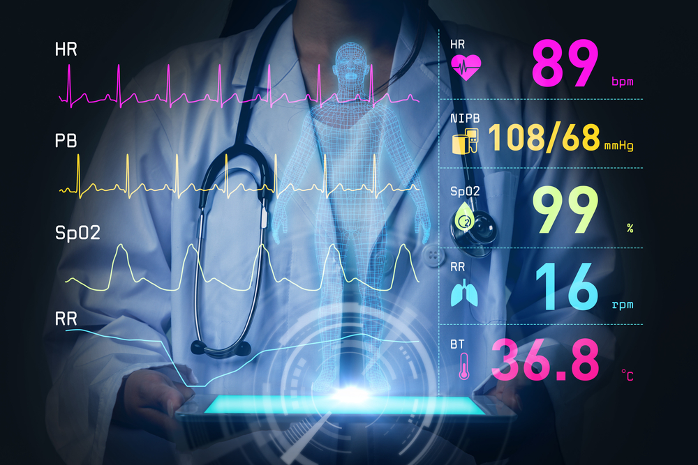

Internet of Health Things

The Internet of Healthcare Things, IoHT in short, is a concept that describes uniquely identifiable devices connected to the Internet and able to communicate with each other, used in the medical area. These solutions enable, for example, localization and real-time information about assets. Remote or automatic management of resources is possible too. This leads not only to higher quality care and time savings, but also ensures patient safety. Thanks to the IoHT, managing medical facilities is more efficient with uninterrupted access to equipment, data and patients’ information. The most important features of most IoHT solutions are flexibility and personalization. Systems can be adapted to every facility, no matter what specialization or size. They can also be integrated with existing technologies and software, connected and modified.
Advantages for patients:
- Fast and easy notification of personnel about problems, by the patient or a device
- Continuous monitoring of patients' conditions and saving their parameters
- Increasing saety by providing remote medical care and detection of dangerous events
- Faster and more effective access to medical care, and therefore to diagnosis and treatment
- Comprehensive care outside medical facilities
- Automatic transfer and analysis of data collected by devices
- Remote medical consultations
- Automatic reminders
Advantages for medical staff:
- Constant access to patients’ full medical history including latest data
- Help of algorithms which can detect abnormalities
- Easy location of patients with orientation difficulties (e.g. those suffering from dementia)
- Quick and easy location of devices and other equipment
- Constant access to essential information about the patients from mobile application
- Patients’ database available through a web browser
Advantages for managers and IT staff:
- Geofencing/protection against theft, notifications when devices leave a defined area
- Control of access to data and resources
- Automatic or remote control of lighting systems, which can save energy and regulate patients’ circadian rhythm
- Analysis of resource consumption
- Movement detection via sensors and alerts
- Preventive/predictive maintenance
- Quick data access and transfer in the event of emergency
- Real-time fault and error detection
- Maintenance automation
Click here for more examples of IoT in healthcare